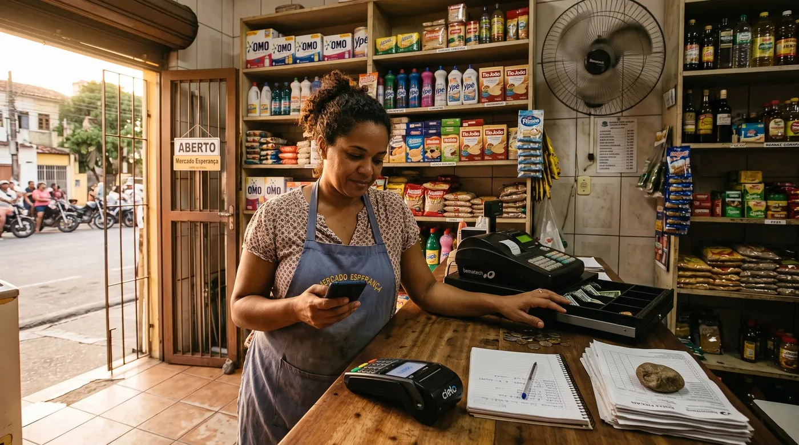

Dinheiro retido e conta bloqueada: o que fazer
Há um desastre de pequeno comércio sobre o qual quase ninguém escreve um guia, apesar de os lojistas o relatarem às centenas nos sites de reclamação. A venda foi feita. O cliente foi embora satisfeito. E o dinheiro não cai, porque a empresa que processa os seus recebimentos decidiu retê-lo. Um prestador de serviços contou assim: «Aprisionaram o dinheiro por quase 10 dias… depois de 15 dias mandaram email alegando que meu dinheiro ia ficar retido com eles por até 120 dias, sem ao menos dizer o motivo». Este guia é sobre o que está realmente a acontecer, e em que ordem reagir.

O que está mesmo a acontecer quando «retêm» o seu dinheiro
A mesma palavra descreve três coisas diferentes, e cada uma tem uma saída diferente. Vale a pena saber em qual está antes de escrever o primeiro e-mail.
Para continuar: antes de assinar qualquer coisa, veja quanto as taxas de recebimento custam e depois Stone, PagBank ou Mercado Pago. Se for o seu caso, também controlar o fiado.
Um atraso de repasse é uma questão de calendário: o dinheiro existe, é seu, chega mais tarde. Chato, e normalmente resolve-se com um chamado.
Uma reserva é um colchão contratual e deliberado. A reserva rotativa retém uma percentagem de cada dia e liberta-a passado um prazo fixo; a reserva fixa retém um valor. Costuma estar descrita no contrato, e existe porque quem assume a perda se um cliente contestar uma compra que nunca recebeu é a adquirente, não você.
Um bloqueio ou encerramento de conta é outra coisa. A relação termina ou fica suspensa, e o saldo é retido contra o risco de chargebacks futuros. É aqui que aparecem os prazos longos. Um lojista descreveu uma conta suspensa por 90 dias depois de uma venda comum: «Fiz uma venda pelo PagBank que não é a primeira… depois da venda apareceu que minha conta foi suspensa e entrar em análise pra 90 dias. Eu não tenho esse prazo de 90 dias pra esperar, já apresentei as notas».
Esse prazo longo não é um capricho, e percebê-lo muda o argumento que convém usar. As regras das bandeiras dão ao titular do cartão uma janela ampla para contestar uma compra, por isso uma adquirente que encerrou a relação fica sentada sobre uma fila de chargebacks possíveis que já não pode compensar com as suas vendas futuras. É essa a lógica. Não justifica o silêncio, mas discutir «não têm o direito de reter nada» é mais fraco do que discutir «o risco já passou, aqui estão as provas, liberem».
Os cinco motivos que disparam uma retenção
Lidos muitos casos, repetem-se sempre os mesmos gatilhos. Nenhum exige que tenha feito algo de errado.
- Uma mudança brusca de volume ou de ticket médio. É de longe a história mais frequente. Um multimarcas descreveu duas vendas de 15.000 e 30.000 reais no mesmo dia e, nesse mesmo dia, um e-mail: «não temos interesse em seguir uma relação contratual com o seu estabelecimento. Informamos, assim, a rescisão imediata do contrato… além de permitir a retenção de todo e qualquer valor».
- Um desencontro entre o ramo declarado e o que realmente cobra. Se a conta diz cafetaria e as operações parecem venda por atacado, o modelo de risco reage.
- Uma contestação levantada a montante. Basta uma denúncia de terceiros para a conta entrar em análise, muitas vezes sem via para responder.
- Documentação que nunca lhe pediram até agora. Comprovativo de entrega, notas, identificação. Vários lojistas descrevem que lhes pedem «fotos e vídeos do serviço prestado para provar legalidade» — e que, mesmo enviando tudo de imediato, o saldo continua retido.
- Simplesmente ser conta nova. Pouca antiguidade e recebimentos grandes é o perfil clássico. E há a variante mais absurda: a conta encerrada onde os pagamentos continuam a entrar. «A conta está bloqueada, continuo recebendo depósitos, mas não consigo acessar o dinheiro que é meu por direito.»
As primeiras 48 horas, por ordem
Quase todos estes relatos acabam com semanas perdidas no ciclo do suporte, e a razão costuma ser que as primeiras 48 horas se gastaram ao telefone em vez de por escrito. Faça por esta ordem.
- Pare hoje de receber por esse fornecedor. Parece drástico e é o passo mais importante: cada venda que continue a passar por uma conta bloqueada é mais dinheiro seu do lado errado da porta — é exatamente a armadilha da conta encerrada que continua a receber depósitos.
- Peça o motivo por escrito. Uma pergunta precisa por e-mail ou pelo chat da app, não por telefone: qual é o motivo concreto da retenção, qual é o prazo de análise, em que data o valor é liberado e que documento precisam de mim. Uma chamada não deixa rasto e a resposta muda com o atendente.
- Envie as provas de uma vez, sem esperar que peçam. Registo de vendas com o que foi vendido e quando, notas ou recibos, comprovativo de entrega ou de serviço prestado, e o registo da atividade. Tudo numa mensagem numerada, não em cinco respostas ao longo de quinze dias.
- Faça capturas de ecrã todos os dias. Saldo, calendário de repasses, cada mensagem. Perder o acesso ao próprio painel é comum, e sem capturas fica sem prova do que estava lá.
- Escreva a cronologia à medida que acontece. Data, hora, com quem falou, o que lhe disseram. É este documento que faz funcionar uma reclamação no regulador, e é impossível reconstruí-lo de memória dois meses depois.
Como escalar para além do suporte
O suporte de primeira linha não tem competência para libertar o seu dinheiro, e os lojistas descrevem-no com precisão: «Suporte é horrível, só fala a mesma coisa. Não resolve nada, só manda esperar». Repetir esse ciclo não é insistência, é gastar o único recurso que lhe resta, que é tempo.
- Peça por escrito um número de protocolo formal e o prazo de resposta definitiva. Essa frase tira o processo do atendimento geral e põe um relógio a andar.
- No Brasil, use o registo público e o regulador. A ficha na Reclame Aqui é acompanhada pelas próprias empresas — na ficha da PagBank, quatro das cinco reclamações mais recentes são sobre bloqueio de conta ou retenção. Em paralelo, existe o canal de reclamação do Banco Central e a plataforma consumidor.gov.br, e os Procons estaduais.
- Em Portugal, o Banco de Portugal recebe reclamações sobre instituições de pagamento, e o Livro de Reclamações eletrónico é obrigatório. O Portal da Queixa funciona como registo público equivalente.
- Considere os juizados especiais (ou o julgado de paz, em Portugal): é um procedimento barato, muitas vezes sem advogado, e a ameaça credível por escrito às vezes resolve o impasse antes de dar entrada.
- Use o registo público com método. Uma reclamação pública datada, sóbria e verificável não é um desabafo, é pressão. Fique-se por factos comprováveis.
Continuar a vender com o dinheiro parado
O bloqueio é antes um problema de caixa do que um problema jurídico, e os negócios morrem pela parte da caixa enquanto a jurídica ainda corre.
- Abra hoje uma segunda via de recebimento com outra empresa, e de preferência tenha-a montada antes de precisar. É o argumento inteiro para não deixar que uma só empresa seja ao mesmo tempo o seu PDV e o seu banco.
- Avise os fornecedores antes de falhar um pagamento, não depois. Quem explica um bloqueio na primeira semana mantém o prazo; quem desaparece três semanas, não.
- Continue a vender e continue a registar. O seu próprio registo de vendas é a prova que sustenta a liberação, por isso um período de vendas sem registo enfraquece o processo além das contas.
- Separe o dinheiro pessoal do da loja, em definitivo. Um comerciante em Portugal descreveu um bloqueio que apanhou «valores meus que já tinham na conta que eram oriundo de transferência bancária e não de vendas na plataforma».
Como ser um comerciante aborrecido e de baixo risco
Não pode tornar um bloqueio impossível. Pode deixar de ser um candidato provável, e encurtar a análise se acontecer.
- Avise antes de uma venda fora do padrão. Um e-mail de uma linha — «na sexta faturamos um pedido de R$ 20.000, muito acima do nosso ticket habitual, seguem cliente e pedido» — não custa nada e desarma o gatilho que encerra a maioria destas contas.
- Declare a atividade que realmente exerce, incluindo a parte que gera os tickets altos.
- Guarde comprovativo de entrega de tudo o que for relevante. Canhoto assinado, rastreio, foto datada. É o documento que pedem, sempre.
- Mantenha os chargebacks baixos e responda depressa. Um histórico limpo de contestações é o melhor argumento no dia em que pedir uma liberação.
- Localize hoje as cláusulas de reserva e de rescisão do seu contrato, e anote os números onde os volte a encontrar.
Separar o PDV da adquirente
digabloPos
A lição estrutural que se repete em todos estes casos é a mesma: quando a empresa que faz o seu PDV é também a que guarda o seu dinheiro, uma decisão de risco dentro do sistema dela leva a sua loja atrás. O digabloPos não cobra comissão imposta e não é adquirente, por isso mantém o seu próprio credenciador e pode ter um segundo pronto sem renegociar o software. E guarda um registo por operação, com a forma de pagamento e o funcionário associados a cada venda, a funcionar offline com sincronização automática — o que aqui conta, porque esse registo é precisamente a prova sobre a qual se constrói um pedido de liberação.
Sejamos claros quanto aos limites. O digabloPos não liberta valores retidos pela sua adquirente, não influencia uma decisão de risco e não intervém no seu contrato de credenciamento — nenhum PDV o faz, e desconfie de quem o insinuar. O que faz é impedir que os dois papéis sejam a mesma empresa. O plano base é gratuito para sempre para 2 funcionários com 30 dias de histórico; um terceiro funcionário e o histórico ilimitado são módulos pagos, e aqui o histórico longo é o ponto, porque uma retenção pode recuar mais do que trinta dias.
👍 Pontos fortes
- Não é adquirente: o PDV sobrevive a uma troca de maquininha
- Sem comissão imposta, por isso uma segunda via de recebimento não custa nada em software
- Registo por operação, que é a prova pedida numa liberação
- Gratuito para sempre no plano base e sem fidelização
👎 A saber
- Não liberta nem acelera uma retenção decidida pela adquirente
- Não liquida recebimentos nem participa no contrato de credenciamento
- O plano gratuito guarda 30 dias de histórico; o ilimitado é pago
Tenha um registo de vendas que seja seu
Abra um PDV gratuito e registe uma semana de vendas em paralelo ao que usa hoje. Se um dia lhe retiverem um repasse, é esse registo independente que vai enviar.
Criar o meu PDV gratuitoPerguntas frequentes
Por que bloquearam a minha conta e retiveram o dinheiro?
Quase sempre por um de cinco gatilhos, e nenhum exige que tenha feito algo de errado: uma mudança brusca de volume ou de ticket médio, um desencontro entre o ramo declarado e o que cobra, uma contestação levantada por terceiros, documentação que nunca lhe tinham pedido, ou simplesmente ser conta nova com recebimentos altos. O caso mais repetido é uma única venda invulgarmente alta seguida, no mesmo dia, da retenção ou da rescisão.
Por que retêm o dinheiro por 90 ou 120 dias?
Porque as regras das bandeiras dão ao titular do cartão uma janela ampla para contestar uma compra, de modo que uma adquirente que encerra a relação fica com uma fila de chargebacks possíveis que já não pode compensar com as suas vendas futuras. Não justifica que não lhe expliquem nada, mas muda o argumento útil: em vez de negar o direito de reter, convém demonstrar que o risco já passou e pedir a liberação com provas.
O que faço nas primeiras 48 horas?
Pare imediatamente de receber por esse fornecedor, para não continuar a entrar dinheiro do lado errado da porta. Peça o motivo por escrito e não por telefone, perguntando em concreto pelo motivo, prazo de análise, data de liberação e documento necessário. Envie todas as provas de uma vez numa mensagem numerada, faça capturas do painel todos os dias porque perder o acesso é comum, e escreva uma cronologia datada de cada contacto.
A quem reclamo quando o suporte só manda esperar?
Saia do ciclo do suporte e peça por escrito um número de protocolo formal e o prazo de resposta definitiva. No Brasil, use em paralelo o canal de reclamação do Banco Central, o consumidor.gov.br, o Procon e o registo público na Reclame Aqui, que as empresas acompanham. Em Portugal, o Banco de Portugal recebe reclamações sobre instituições de pagamento e o Livro de Reclamações eletrónico é obrigatório. Os juizados especiais, ou o julgado de paz, são o passo seguinte realista.
A conta foi encerrada mas os pagamentos continuam a entrar. E agora?
É uma das situações mais relatadas e a mais urgente de travar: pare de direcionar qualquer recebimento para essa conta hoje, antes de mais nada. Depois peça por escrito, num único pedido, o saque do saldo já apurado, anexando as notas das vendas correspondentes, e registe a recusa se houver. Essa recusa escrita é precisamente o documento que dá força a uma reclamação no regulador.
Como continuo a vender com o dinheiro retido?
Abra já uma segunda via de recebimento com outra empresa, de preferência montada antes. Avise os fornecedores na primeira semana em vez de falhar um pagamento, continue a vender e a registar cada venda porque esse registo sustenta o pedido de liberação, e garanta que o dinheiro pessoal não está na mesma conta: há bloqueios que apanham valores chegados por transferência sem relação nenhuma com as vendas com cartão.
Um sistema de PDV evita que retenham o meu dinheiro?
Não, e desconfie de quem o insinuar. Nenhum PDV liberta uma retenção, influencia uma decisão de risco ou intervém no contrato de credenciamento. O que muda ao escolher um PDV que não seja também a sua adquirente é que uma só empresa deixa de ser ao mesmo tempo o seu caixa e o seu banco, de modo que uma decisão do lado dos recebimentos não paralisa a operação da loja e pode manter pronta uma segunda via.
Fontes
Todos os relatos citados vêm de páginas públicas de reclamação e de avaliação. Leia-os no contexto; estas páginas mudam de paginação com o tempo.
- Reclame Aqui: saldo retido dez dias, depois anúncio de até 120 dias sem motivo, e acesso à app cortado.
- Reclame Aqui: duas vendas altas no mesmo dia, rescisão imediata e retenção de todo e qualquer valor.
- Reclame Aqui, PagBank: conta suspensa por 90 dias após uma venda comum, com notas apresentadas.
- Avaliações do InfinitePay: conta encerrada que continua a receber depósitos sem permitir saque.
- Portal da Queixa: bloqueio que apanhou valores chegados por transferência bancária.
- Banco Central do Brasil e Banco de Portugal: vias oficiais de reclamação, a confirmar antes de apresentar.